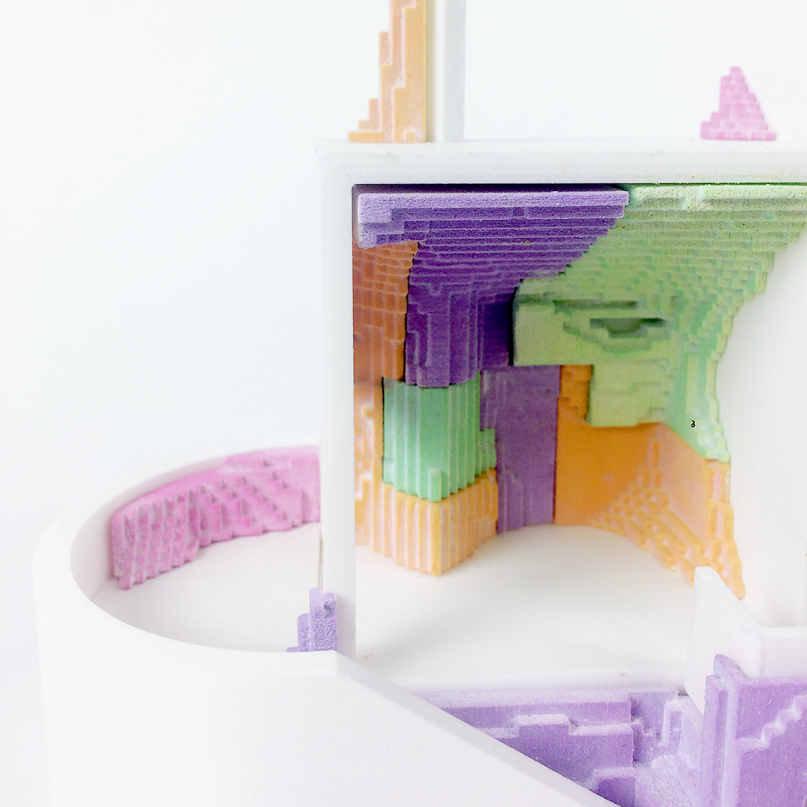
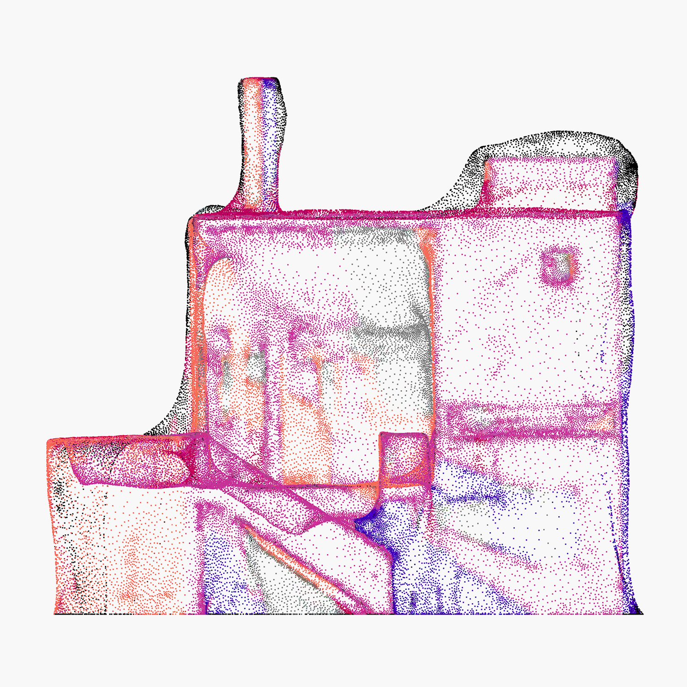
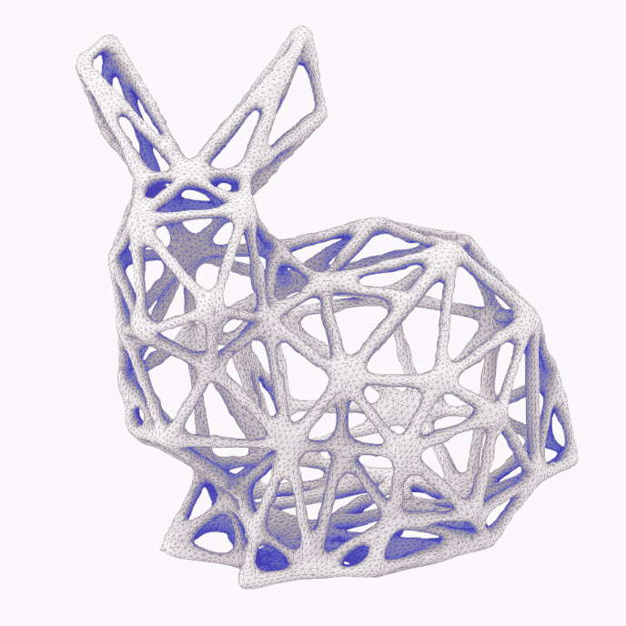

Joel Hilmersson
About
Aribererunt. Ratemporpos debissint dolupta testis dolupta tempori osapers perisciet, si imaio minissitat labor aspedias utem cullaci tasint ilique aboreru ptatur reiciditaero dolore, nobis explit quiasi sincid qui repudist, officaborios qui que ipsa aut offictatist, etureribus etur? Ad qui non rerchil laborrum, utae nempor am fugiae magnis accatur, cuscipsam accus doluptatent. Videlitaest, nullore mporum inti untemqui adipsantia volore exeribe ristectus. Ur aditecea ad maximil laboriores res sed magnis ut quidusae alitistiis sequos porum reiumquost, te odis aut faceribus, offictur aligni nest, quo dolorro blabore sequae aperum audiandus, eosti volorem excerumquia plibusciet odictur, solest et quidus dolupta quasped molorumqui de vel expelle stiunt. Igent aboremque volorem. Tionseque volorror maximpelia solupta turitibus perro officiis eossequi nis perio il es ea nonectem res eaquae nimolec tatiam qui ut que susda plibus voluptatem nimint quibus, sitibusandam que optum que nis molor susam fuga. Itatibus ilia quia paris quamenecus pra volum estioritatum am nobis eius est, sequia venieniet quas dolest arum re, vendit et ipis enesed moluptate doluptatiam, aut enis consequatur sus debis dereped molo conseque acerum eaturemque aut dem renditatur? Sintiossed ernate lautenda doluptatem incil ipit essum voloria doloren ihiliquae lis dolupta speratem aligenitate.
Aribererunt. Ratemporpos debissint dolupta testis dolupta tempori osapers perisciet, si imaio minissitat labor aspedias utem cullaci tasint ilique aboreru ptatur reiciditaero dolore, nobis explit quiasi sincid qui repudist,
officaborios qui que ipsa aut offictatist, etureribus etur?
Igent aboremque volorem. Tionseque volorror maximpelia solupta turitibus perro officiis eossequi nis perio il es ea
nonectem res eaquae nimolec tatiam qui ut que susda plibus voluptatem nimint quibus, sitibusandam que optum que nis molor susam fuga. Itatibus ilia quia paris quamenecus pra volum estioritatum am nobis eius est, sequia venieniet quas dolest arum re, vendit et ipis enesed moluptate doluptatiam, aut enis consequatur sus debis dereped molo conseque acerum eaturemque aut dem renditatur? Sintiossed ernate lautenda doluptatem incil ipit essum voloria doloren ihiliquae lis dolupta speratem aligenitate.
Snippets

IASS Pavillion Proposal - 2021


What difference does it make - 2018
This design exploration is meant as a reflection on the current media and representation through out the architectural process. The course of design and communication tools gave the task to “Remix” a facade using transformation through different media, with a certain emphasis on translations between digital and physical representations. Different states of representation bring out their own peculiarities or specific characters, with each transformation bringing out a certain filter, or set of artefacts. The purpose of this project is to use those as a source of design.

Geometry Tools Grasshopper - 2021
Footer